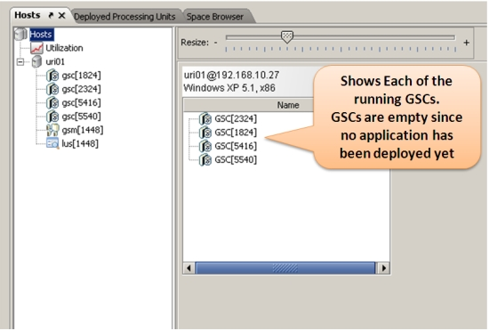
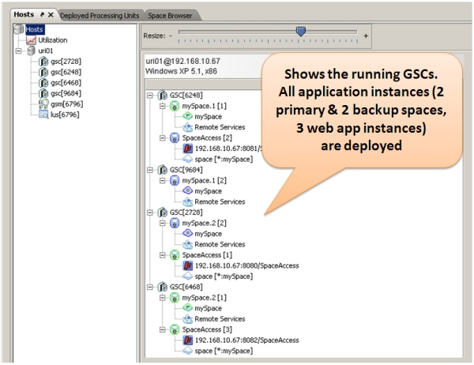
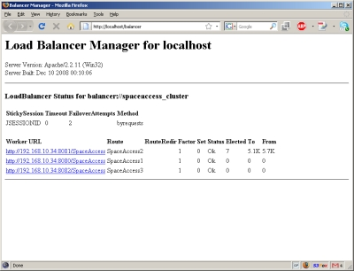
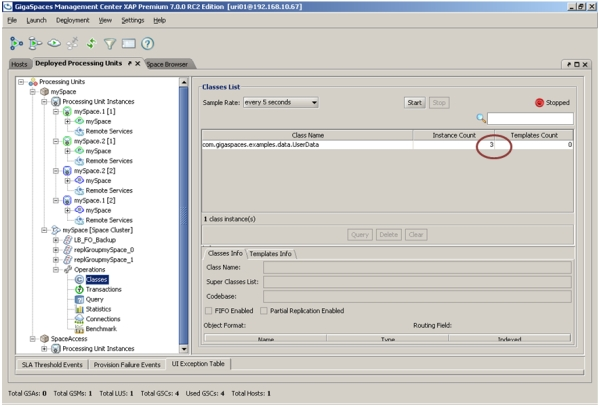

Step summary: Learn how to access the GigaSpaces in memory data grid from within your web application, thus removing the database bottleneck from your data access layer
Example Application Overview
The example application is composed of a JSP page, a servlet which accesses the space and simple data object. It is very similar to the example introduced in the previous step, but rather accesses the space directly instead of accessing the HTTP session. The AccessSpaceServlet is responsible for retrieving request parameters, creating an instance of type UserData and writing it to the space. The SpaceContents.jsp displays the contents of all the UserData instances stored in the Space, and renders two input fields, Name and Value for the user to input new values.
Click here for code snippets and screenshot of the sample application...
Here's a snippet of the UserData class:
public class UserData { private String name; private String value; private String userId; ... //Marks the field that is used to identify the class @SpaceId //Marks the routing field, whose value is used by the space proxy to determine the partition to //which the instance will be routed @SpaceRouting public String getName() { return name; } public void setName(String name) { this.name = name; } //other getters and setters ...
Here's a snippet of the doPost method of the AccessSpaceServlet class (the details of the implementation are discussed later in this tutorial):
public class UpdateSessionServlet extends HttpServlet { /** * @see HttpServlet#doPost(HttpServletRequest request, HttpServletResponse response) */ protected void doPost(HttpServletRequest request, HttpServletResponse response) throws ServletException, IOException { System.out.println("******* Got Request *******"); String userId = request.getSession().getId(); String dataName = request.getParameter("dataname"); String dataValue = request.getParameter("datavalue"); if (isStringNotEmpty(dataName) && isStringNotEmpty(dataValue)) { //Create a new UserData instance based on the request parameters and //write it to the space gigaSpace.write(new UserData(dataName, dataValue, userId), Lease.FOREVER, 30000, UpdateModifiers.UPDATE_OR_WRITE); } //read all existing UserData instances from the space and put the in the request //so that the jsp page can render them UserData[] spaceEntries = gigaSpace.readMultiple(new UserData(), Integer.MAX_VALUE); request.setAttribute("spaceEntries", spaceEntries); //forward request to the jsp page request.getRequestDispatcher("SpaceContents.jsp").forward(request, response); } private boolean isStringNotEmpty(String str) { return (str != null && str.trim().length() > 0); } ... }
Here's the code snippet from SpaceContents.jsp:
<h3>Space Contents</h3> <% String hostName = request.getServerName(); String sessionId = session.getId(); %> <br/> <table> <tr> <td>Servlet container host name:</td> <td><%= hostName %></td> </tr> <tr> <td>Session id:</td> <td><%= sessionId %></td> </tr> </table> <h3>Space Contents:</h3> <% UserData[] spaceEntries = (UserData[])request.getAttribute("spaceEntries"); if (spaceEntries != null ) { for(UserData data : spaceEntries) { %> <%= data.getName() %> = <%= data.getValue() %><br/> <% } %> <% } %> <p/>
When opening this page in a web browser, it looks as follows:
Building the Example
 Steps to build the application:
Steps to build the application:
The first thing you need to do if you haven't already done so, is Download GigaSpaces and set up your development environment.
Next, you should open a shell / command prompt window in the example directory, and type the following:
build.(sh/bat) dist
You should an output similar to the following:
C:\GS-Releases\gigaspaces-xap-premium-7.0.0-ga\examples\web\space-access>build dist
Buildfile: build.xml
build:
[mkdir] Created dir: C:\GS-Releases\gigaspaces-xap-premium-7.0.0-ga\examples\web\s
pace-access\out\common
[javac] Compiling 1 source file to C:\GS-Releases\gigaspaces-xap-premium-7.0.0-ga\
examples\web\space-access\out\common
[mkdir] Created dir: C:\GS-Releases\gigaspaces-xap-premium-7.0.0-ga\examples\web\s
pace-access\WebContent\WEB-INF\classes
[javac] Compiling 1 source file to C:\GS-Releases\gigaspaces-xap-premium-7.0.0-ga\
examples\web\space-access\WebContent\WEB-INF\classes
dist:
[jar] Building jar: C:\GS-Releases\gigaspaces-xap-premium-7.0.0-ga\examples\web\
space-access\WebContent\WEB-INF\shared-lib\common.jar
[jar] Building jar: C:\GS-Releases\gigaspaces-xap-premium-7.0.0-ga\examples\web\
space-access\SpaceAccess.war
BUILD SUCCESSFUL
Total time: 4 seconds
Connecting to the Space
In order to access the space from your application's code you need to get a reference to a Space Proxy. Similar to a database connection, the space proxy enables you to perform various operations on the space, such as writing to and reading from it, registering for notifications, etc.
The space proxy can reference an embedded space, which means that the space instance is running within the same memory space (JVM) as your application, or a remote space, which means that the space is running in separate JVM(s) from your application's JVM. Regardless, the space proxy's API remains the same and is manifested in the GigaSpace interface.
The example application in this tutorial references a remote space, but the techniques presented below are also applicable when accessing an embedded space. The main difference between an embedded and a remote space proxy configuration is the Space URL.
There are several ways to access the Space from within your web application.
The most obvious one is to explicitly create a space proxy inside the web application's code. This is the approach we use in the sample application:
IJSpace space = new UrlSpaceConfigurer("jini://*/*/mySpace").space(); GigaSpace gigaSpace = new GigaSpaceConfigurer(space).gigaSpace();
This code connects to a remote space named mySpace using the jini discovery protocol.
Typically this code will be included inside the web application's initialization sequence in a ServletContextListener implementation, or inside a servlet's init() method, storing the GigaSpace reference inside the ServletContext or as an instance variable in the serlvet class.
Note that the space proxy is thread-safe, so you can freely share it across threads (in fact, you only need one proxy for the entire application).
Another way to initialize the Space, is to configure it inside the pu.xml file in your .war file (located either at the root or under META-INF/spring in your .war file). This file is used to configure various GigaSpaces-specific elements, most notably the Space proxy.
To initialize a Space proxy you should include the following XML elements in your file:
<!--
A bean representing a space (an IJSpace implementation).
Note, we perform a lookup on the space since we are working against a remote space.
-->
<os-core:space id="space" url="jini://*/*/mySpace" lookup-timeout="20000"/>
<!--
OpenSpaces simplified space API built on top of IJSpace/JavaSpace.
-->
<os-core:giga-space id="gigaSpace" space="space"/>
The above snippet creates a space proxy connecting to a remote space named mySpace using the jini discovery protocol, exactly like the previous code example. The created proxy will be stored as a ServletContext attribute, and the attribute name will be the id of the gigaSpace element, in our case gigaSpace (in fact, this is a standard Spring configuration file, and any element defined in it will be bound to the ServletContext automatically).
To obtain the space proxy reference, all your application needs to do is retrieve it from the ServletContext. Here's the relevant snippet that should be included in the servlet's doPost() or doGet() methods:
GigaSpace gigaSpace = (GigaSpace) getServletContext().getAttribute("gigaSpace");
| Spring-Based Web Applications If you're application is Spring based and uses the Spring MVC framework, you can avoid any coding to get the space reference and use dependency injection to wire the space proxy into your application components. |
Interacting with the Space
The Space API is very straightforward. In general, it has the following operations:
- read - Enables you to read objects from the space. You can use the readMultiple methods if you're expecting more than one result. Read criteria is specified via a template (which is an example object whose non-null fields will be matched against existing objects in the space), or via a query with a SQL syntax.
- write - Enables you to write objects to the space. In general you can write any instance to the remote space so long that each of its non-transient fields can be serialized over the wire (i.e. implement Serializable or Externalizable). You can determine various characteristics of the objects written to the space, such as indexing, partitioning, etc. by annotating the object's class or by using XML. The write operation also allows you to batch the writing of multiple objects to the space for optimized performance via the writeMultiple methods.
- take - Enables you to remove objects from the space (similar to the Map#remove method). As with the read operation, the criteria are specified via a template or a query.
- notify - Enables you to register for notifications on changes made to the space (objects written, taken or updated). Upon registration, you can specify a filter using a template or a query.
- execute - Enables you to send tasks for execution on the data grid, utilizing the collocation with the data. Tasks can be sent to one, a few, or all members of the data grid. Results received from the task can then be reduced and returned back to the calling code (this pattern is known as Map/Reduce).
The following snippet from the AccessSpaceServlet demonstrates a write operation, followed by a readMultiple operation using a template of type UserData. This means that all instances of the UserData class currently stored in the space will be returned:if (isStringNotEmpty(dataName) && isStringNotEmpty(dataValue)) { gigaSpace.write(new UserData(dataName, dataValue, userId), Lease.FOREVER, 30000, UpdateModifiers.UPDATE_OR_WRITE); } UserData[] spaceEntries = gigaSpace.readMultiple(new UserData(), Integer.MAX_VALUE);
Considerations - Space or HTTP Session?
By using the space, you gain the following benefits:
- You have a much richer API at your disposal. You can write filter data based on sophisticated criteria, much the same way you would with a database. You can also use the take, notify and execute operations to take full advantage of the Space's capabilities
- You have a more fine-grained control over what gets propagated to the Space and when (with HttpSession this is all done behind the scenes for you)
- You can store information that outlives the user session
- You can share information between all user sessions
| Mixing Space and HTTP Session Approaches Note that incase needed, you can use both approaches in the same application, and decide on a case by case basis. |
Accessing the Space from a Standalone Web Container
In some cases, you may want to access the space from an external web application, or another external client, which is not running on the GigaSpaces containers (Note that this means that application/standalone client is not managed by GigaSpaces and cannot benefit from the convenient deployment and self-healing capabilities of this environment). In such case, you need to make sure to include all the jar files under the <GigaSpaces Root>/lib/required directory in your classpath (typically by placing them in the WEB-INF/lib directory):
- gs-runtime.jar
- gs-openspaces.jar
- commons-logging.jar
- Spring framework jars (all start with com.spring*)
Putting It All Together
Now that we've gone over all the details, let's see everything in action. In this section we will start a partitioned space with 2 primaries and 2 backups. We will deploy 3 web application instances to the GigaSpaces environment. We will then start Apache HTTP server and the Apache load balancer agent (see Step 1 of this tutorial for more details), and connect to the application from the load balancer. We will write some objects into the space and verify that they are indeed there. Finally, we will terminate one of the running containers (the one which handled our requests) and watch the failover and self-healing process in action, verifying that information stored in the space was not lost. Let's start:
- Build the application as described earlier in this tutorial
- Start one GSM by calling <gs root>/bin/gsm.(sh/bat)
- Start four GSCs by calling <gs root>/bin/gsc.(sh/bat) four times
- Start the GigaSpaces user interface by calling <gs root>/bin/gs-ui.(sh/bat). When the user interface is started, you should see the three GSCs presented in it.
Click to view screenshot...
- Deploy the application using the provided build script, by calling build.(sh.bat) deploy. This will start a partitioned Space with 2 primaries and 2 backups, and then three instances of the web application which will connect to the Space. Once deployment is successful, you should see in the UI the Space's two primary and two backup partitions, and 3 instances of the web application.
Click to view screenshot...
- If you haven't already done so, start the Apache HTTP server on port 80 (the default).
- Start the load balancer agent by calling the script <gs root>/tools/apache/apache-lb-agent.(sh/bat) -apache <Apache home>. Apache home is the location of the Apache installation on your disk.
Click to show expected output...Starting apache-lb-agent with line: "c:\Java\jdk1.6.0_11\bin\java" -server -XX:+AggressiveOpts -showversion -Xmx512m -Xbootclasspath/p:.; "c:\GS-Releases\gigaspaces-xap-premium-7.0.0-ga\bin\\..\lib\platform\xml\serializer.jar"; "c:\GS-Releases\gigaspaces-xap-premium-7.0.0-ga\bin\\..\lib\platform\xml\xalan.jar"; "c:\GS-Releases\gigaspaces-xap-premium-7.0.0-ga\bin\\..\lib\platform\xml\xercesImpl.jar"; "c:\GS-Releases\gigaspaces-xap-premium-7.0.0-ga\bin\\..\lib\platform\xml\xml-apis.jar" -Dlb.vmDir="c:\GS-Releases\gigaspaces-xap-premium-7.0.0-ga\bin\\../tools/apache" -Dcom.gs.jini_lus.locators= -Dcom.gs.jini_lus.groups=myGroup -Dsun.rmi.dgc.client.gcInterval=36000000 -Dsun.rmi.dgc.server.gcInterval=36000000 -Djava.rmi.server.hostname=""HOST01"" -Djava.rmi.server.RMIClassLoaderSpi=default -Djava.rmi.server.logCalls=false "-Dcom.gs.home=c:\GS-Releases\gigaspaces-xap-premium-7.0.0-ga\bin\\.." -Djava.security.policy="c:\GS-Releases\gigaspaces-xap-premium-7.0.0-ga\bin\\..\policy\policy.all" -classpath ;.;"c:\GS-Releases\gigaspaces-xap-premium-7.0.0-ga\bin\\..";.; "c:\GS-Releases\gigaspaces-xap-premium-7.0.0-ga\bin\\..\lib\required\commons-logging.jar"; "c:\GS-Releases\gigaspaces-xap-premium-7.0.0-ga\bin\\..\lib\required\gs-openspaces.jar"; "c:\GS-Releases\gigaspaces-xap-premium-7.0.0-ga\bin\\..\lib\required\gs-runtime.jar"; "c:\GS-Releases\gigaspaces-xap-premium-7.0.0-ga\bin\\..\lib\required\spring.jar";.;.; "c:\GS-Releases\gigaspaces-xap-premium-7.0.0-ga\bin\\..\lib\optional\spring\cglib-nodep-2.1_3.jar"; "c:\GS-Releases\gigaspaces-xap-premium-7.0.0-ga\bin\\..\lib\optional\spring\common-annotations.jar";.; "c:\GS-Releases\gigaspaces-xap-premium-7.0.0-ga\bin\\..\lib\platform\jdbc\h2.jar"; "c:\GS-Releases\gigaspaces-xap-premium-7.0.0-ga\bin\\..\lib\platform\jdbc\hsqldb.jar";.; "c:\GS-Releases\gigaspaces-xap-premium-7.0.0-ga\bin\\..\lib\platform\velocity\velocity-dep-1.5.jar"; org.openspaces.pu.container.jee.lb.apache.ApacheLoadBalancerAgent -apache c:\Apache2.2 java version "1.6.0_11" Java(TM) SE Runtime Environment (build 1.6.0_11-b03) Java HotSpot(TM) Server VM (build 11.0-b16, mixed mode) Log file: c:\GS-Releases\gigaspaces-xap-premium-7.0.0-ga\bin\..\logs\2009-06-10~18.28-gigaspaces-service-host01-2860.log Starting Apache Load Balancer Agent... groups [myGroup], locators [null] apachectl Location [c:\Apache2.2/bin/httpd.exe] config directory [c:\Apache2.2/conf/gigaspaces] update config interval [10000ms] Detecting existing config files... Done detecting existing config files LUS Discovered [com.sun.jini.reggie.RegistrarProxy[registrar=fa303c3a-efab-419c-9d33-9fba6013ce3d DynamicSmartStub [ImplObjClass: com.sun.jini.reggie.GigaRegistrar, ConnectionURL: NIO://HOST01:2083/pid[6796]/33919865548192_1_-2399564307679509764, MaxConnPool: 1024 ]]] Started Apache Load Balancer Agent successfully Make sure Apache is configured with [Include c:\Apache2.2\conf\gigaspaces/*.conf] [SpaceAccess]: Adding [dfba8f76-b7b8-4bd6-8405-65fc0f715d52] [192.168.10.67:8081/SpaceAccess] [SpaceAccess]: Adding [8277ac76-ece7-4df0-8813-f5b9dc7c0d74] [192.168.10.67:8082/SpaceAccess] [SpaceAccess]: Adding [fc3e580a-df90-4a1f-942b-676453603b6d] [192.168.10.67:8080/SpaceAccess] [SpaceAccess]: Detected as dirty, updating config file... [SpaceAccess]: Using balancer template [c:\GS-Releases\gigaspaces-xap-premium-7.0.0-ga\bin\..\tools\apache\balancer-template.vm] Jun 10, 2009 6:28:48 PM org.apache.velocity.runtime.log.JdkLogChute log INFO: FileResourceLoader : adding path '.' [SpaceAccess]: Updated config file Executing ["c:\Apache2.2/bin/httpd.exe" -k restart]... Executed ["c:\Apache2.2/bin/httpd.exe" -k restart], exit code [0]
- Now let's verify that the application works as expected. Assuming Apache runs on your local machine on port 80, open you web browser and point it to http://localhost/SpaceAccess/. You should see the application's welcome page. Another way to verify this is point your web browser to http://localhost/balancer. You should see the summary screen of Apache's load balancing module. In this screen you should see listed the two running web containers.
Click to view screenshots...
- Type in values once or twice by filling the "Field" and "Value" text boxes and clicking submit. You should see them now above the text boxes, which means they were inserted to the space. You can also see that they are stored in the space using the GUI. Click the "Space Browser" tab on the left, and then expand and click the following node on the "Grid Tree" pane on the right: Clusters --> mySpace --> Operations --> Classes. You will notice that the number of instances of type UserData is more than 0.
Click to view screenshots...
Demonstrating Failover & Self Healing
Now let's deliberately terminate one of the GSCs on which the application is deployed:
- Locate one of the GSCs on which a request was received. To do that, check the console of the running GSCs and find the one that has shows the following output once or more at the bottom:
********** Got Request **********
- Next, terminate the process of the GSC you located. Quickly switch to the GigaSpaces user interface - you will see that this GSC has disappeared. You will also see that the application and space instances which ran on the terminated GSC are re-instantiated on one of the existing GSCs. So in effect, the application self-healed itself so that all components are still running!
- The load balancer agent will pick up the change in runtime state, and will update the apache load balancer (this may take a few seconds). You can now refresh the page in your web browser and see the space content you entered before still appears on the screen, and everything still works as before.
What's Next?
 You have completed the web application scaling tutorial.
You have completed the web application scaling tutorial.
Click here to view other tutorials or go directly to the GigaSpaces XAP programmer's guide.